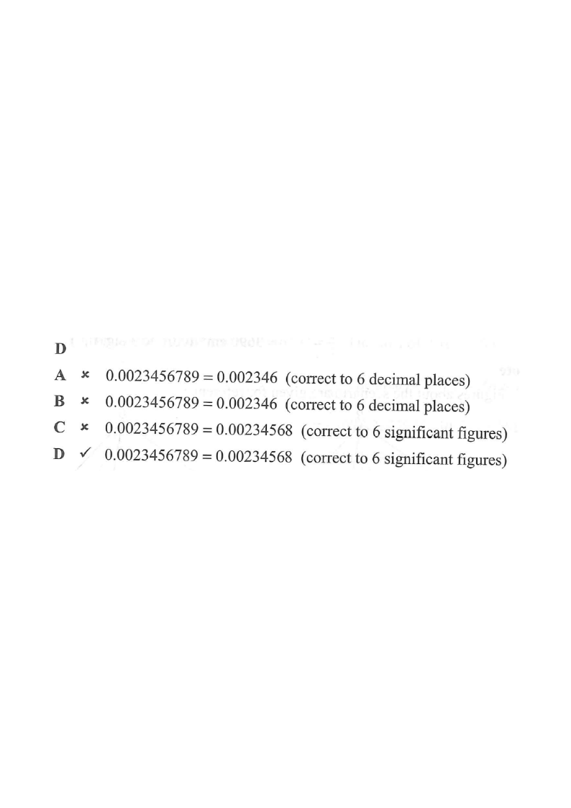

Place-value column1st significant figure6th significant figure6th decimal place
Scroll the solution → the diagram highlights the relevant idea.
2015 MC Q4
Which of the following is true?
$0.0023456789 = ?$
A. $0.0023456789 = 0.00235$ (correct to 6 decimal places)
B. $0.0023456789 = 0.002345$ (correct to 6 decimal places)
C. $0.0023456789 = 0.002346$ (correct to 6 significant figures)
D. $0.0023456789 = 0.00234568$ (correct to 6 significant figures)

Figure (original exam diagram)
1Find the first significant figure.
Significant Figures\(0.00\,2\,3\,4\,5\,6\,7\,8\,9\ \Longrightarrow\ \text{counting starts at }2\)Leading zeros are not significant, so the first significant figure of \(0.0023456789\) is the \(2\).
Ignore all leading zeros. The digits of $0.0023456789$ after the leading zeros are
$$2\;\underline{3}\;\underline{4}\;\underline{5}\;\underline{6}\;\underline{7}\;\underline{8}\;\underline{9}$$
so the first significant figure is 2
(in the 3rd decimal place).
Significant figures start at the first non-zero digit.
2Round to 6 significant figures.
Count 6 sig. figs from the 2:
$$2,\;3,\;4,\;5,\;6,\;\underbrace{7}_{\text{6th s.f.}},\;\underbrace{8}_{\text{decides}}\;9$$
The 7th digit is $8 \ge 5$, so round the 6th digit up
Rounding Rule\(d\ge5\ \Longrightarrow\ \text{round up},\qquad d<5\ \Longrightarrow\ \text{round down}\)The digit after the 6th significant figure is \(8\ge5\), so \(0.00234567\,|\,89\) rounds up to \(0.00234568\).
:
$$0.0023456789 \;\to\; 0.00234568 \quad (6\text{ s.f.})$$
Look at the digit just after the 6th sig. fig. to decide up or down.
3Check the "6 decimal places" claim.
6 decimal places means keep 6 digits after the decimal point:
$0.002345\,|\,6789$ → the 7th decimal is $6 \ge 5$, so
$$0.0023456789 \to 0.002346 \quad (6\text{ d.p.})$$
This is not
Decimal Places\(6\ \text{d.p.}=\text{keep 6 digits after the decimal point}\)Here \(0.002345\,|\,6789\) has 7th decimal \(6\ge5\), so it becomes \(0.002346\) — a different answer from 6 s.f.
$0.002346$ (option C) — and it is definitely not $0.00235$ or $0.002345$.
Options A and B use decimal places, but their values are wrong anyway.
4Compare with the options.
Option
Claim
Verdict
A
$0.00235$ (6 d.p.)
✗ value wrong
B
$0.002345$ (6 d.p.)
✗ value wrong
C
$0.002346$ (6 s.f.)
✗ only 2 s.f., not 6
D
$0.00234568$ (6 s.f.)
✓ correct
Counting sig. figs from the first non-zero digit gives 6: 2, 3,4,5,6,8.
AnswerD — $0.0023456789 = 0.00234568$ (correct to 6 significant figures)